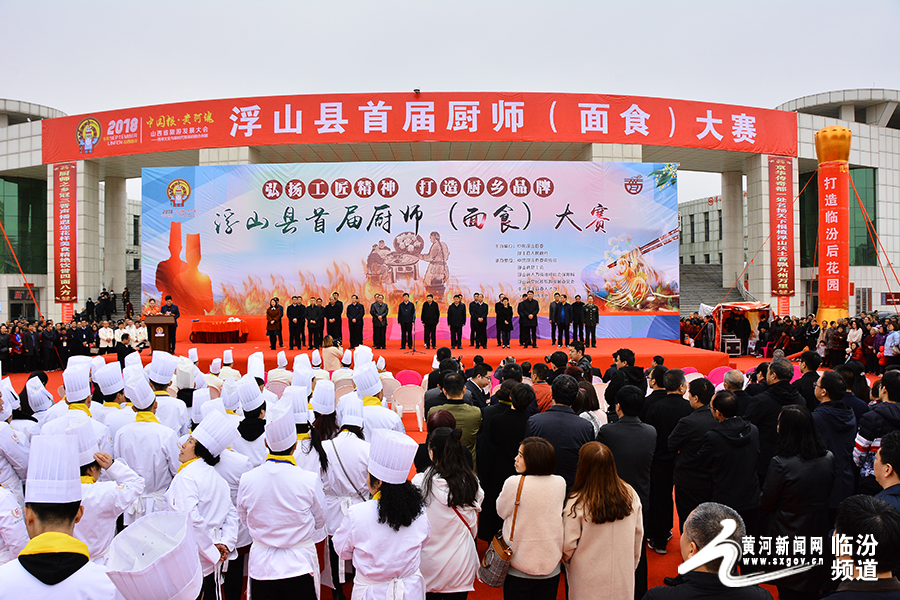

尧庙
位于尧都区秦蜀路南，是国家AAAA级旅游景区，省级文物保护单位。始建于西晋，是历代国祭帝尧 ，民祭尧、舜、禹三位先祖的庙宇，俗称“三圣庙”，已有1700多年历史，是一座承载着中国五千年文明史的国祖庙。主要景观有五凤楼、广运殿、万寿宫、尧字壁廊等。
| 区划名称 | 常住人口 （2010年11月） | 户籍人口 （2010年末） | ||
|---|---|---|---|---|
| 总计 |
比重
(%) |
每平方公里
人口密度 |
||
| 临汾市 | 4316610 | 100 | 212.90 | 4373217 |
| 尧都区 | 944050 | 21.87 | 717.36 | 835806 |
| 曲沃县 | 237033 | 5.49 | 542.41 | 234957 |
| 翼城县 | 311471 | 7.22 | 271.08 | 317822 |
| 襄汾县 | 442614 | 10.25 | 430.56 | 495299 |
| 洪洞县 | 733420 | 16.99 | 490.91 | 764807 |
| 古 县 | 91798 | 2.13 | 77.08 | 92595 |
| 安泽县 | 82012 | 1.90 | 41.86 | 84243 |
| 浮山县 | 127831 | 2.96 | 136.28 | 135454 |
| 吉 县 | 106407 | 2.47 | 59.78 | 109995 |
| 乡宁县 | 233167 | 5.40 | 115.14 | 241899 |
| 大宁县 | 64501 | 1.49 | 66.98 | 69867 |
| 隰 县 | 103617 | 2.40 | 73.33 | 112362 |
| 永和县 | 63649 | 1.47 | 52.47 | 67383 |
| 蒲 县 | 107339 | 2.49 | 71.13 | 109873 |
| 汾西县 | 144791 | 3.35 | 165.48 | 147127 |
| 侯马市 | 240005 | 5.56 | 1086.00 | 245413 |
| 霍州市 | 282905 | 6.55 | 370.29 | 308315 |
(实时温度)


最新新闻 更多
-
山西师大家和万事兴--家教家风主题展
3月5日，在“三八”妇女节即将来临之际，山西师范大学美术馆举办“家和万事兴——家教家风”主题展，据悉，本次活动由中国妇女儿童博物馆主办，中共临汾市纪委、市妇联、市文明办承办，山西师范大学协办。
-
十三届全国人大一次会议开幕会：郭凤莲代表接受采访
3月5日，第十三届全国人民代表大会第一次会议在北京人民大会堂开幕。这是全国人大代表郭凤莲在“代表通道”接受采访。人民网记者 翁奇羽 摄
-
视觉临汾：浮山千人厨师（面食）大赛 高手展技艺
为助力全省旅游发展大会，弘扬浮山厨师工匠精神，打造浮山厨乡品牌。3月6日上午10点，浮山县首届厨艺（面食）大赛在浮山文体广场拉开了序幕。本次大赛为期两天，主题是“弘扬工匠精神，打造厨乡品牌”。厨艺大赛比赛现场邀请面食大师进行山西特色面食表演，有大把拉面、吹面气球、一根面、独轮车削面四个表演项目。本次厨师大赛共有花固兰、刀拨面、烧麦、手擀面四个比赛项目。浮山县邀请了7名国家级烹饪大师担任评委，通过比赛评选出一等奖、二等奖、三等奖和优秀奖。
-
临汾市建设社区少数民族志愿者开展志愿服务活动
在第55个学雷锋日之际，3月5日，建设社区少数民族志愿者组织和号召辖区的志愿者开展“不忘初心，牢记使命，快乐志愿，情暖社区”志愿服务活动。